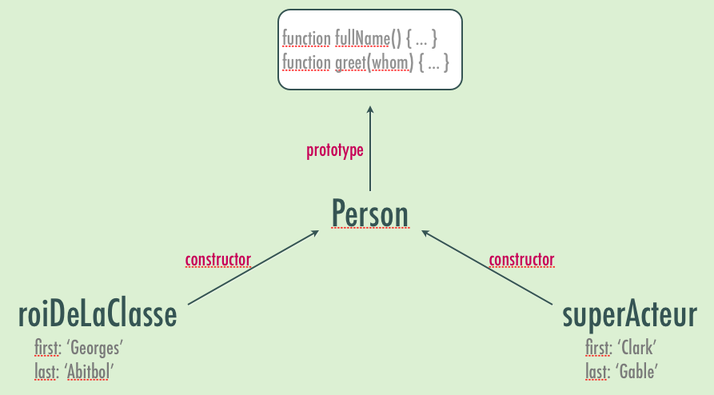

new String(…) new Boolean(…)new Number(…)
new Array(…) // RAREMENT
new Function(…) // RAREMENT
new RegExp(…) // PARFOIS, pour des regex dynamiques
new Date(…)
42 == '42' // => true -- Argh, ça sent le PHP, là…
null == undefined // => true -- hmmm…
null == 0 // => false -- heureusement !
0 == undefined // => false -- heureusement !
0 == false // => true -- Façon C…
1 == true // => true -- Façon C…
42 == true // => false -- Watcha ?! (x == ToNumber(y), ES3 §11.9.3)
'0' == false // => true -- Woah !
'' == false // => true -- Yowza ! 8-O On y reviendra…
NaN == NaN // => false -- Bin oué, c’est le principe…
// avec ===, fini de jouer : vérif valeur ET TYPE !
42 === '42' // => false
null === undefined // => false
null === 0 // => false
0 === undefined // => false
0 === false // => false
'0' === false // => false
NaN === NaN // => false -- rien à faire !
Le capitaine []
// Équivalence stricte statique / dynamique :
obj.x === obj['x']
// Trop La Lose
var angle = 60, result;
if (useSin)
result = Math.sin(angle);
else
result = Math.cos(angle);
// Moins La Lose
var angle = 60, result = useSin ? Math.sin(angle) : Math.cos(angle);
// Trop La Classe
var angle = 60, result = Math[useSin ? 'sin' : 'cos'](angle);// Cas classiques :
element[display ? 'show' : 'hide']();
element[(enable ? 'add' : 'remove') + 'Class']('enabled'); // too much
in et delete
var translator = { name: 'Christophe', langs: ['fr', 'en'] };
'name' in translator // => true
translator.age = 38;
'age' in translator // => true
translator.age = null;
'age' in translator // => true
delete translator.age
'age' in translator // => false
translator.age // => undefined
0 in translator.langs // => true
'0' in translator.langs // => true
translator.langs[3] = 'de';
2 in translator.langs // => false
3 in translator.langs // => true
delete translator.langs[3]
translator.langs // => ['fr', 'en', undefined, undefined]
hasOwnProperty
Quand in ne suffit pas
var translator = { name: 'Christophe', langs: ['fr', 'en'] };
'name' in translator // => true
0 in translator.langs // => true
'toString' in translator // => true
'join' in translator.langs // => true
translator.hasOwnProperty('toString') // => false
translator.hasOwnProperty('name') // => true
translator.langs.hasOwnProperty('join') // => false
translator.langs.hasOwnProperty(0) // => true
Utilisez hasOwnProperty pour filtrer vos for…in… !
Truthy ou falsy?
Quand est-on dans le vrai ?
// 1. undefined, null, false, 0, '', NaN -> false
// 2. N'importe quoi d'autre -> true
'' || '(empty)' // => '(empty)' -- pensez aux valeurs de champs de formulaire…
function f(times) {
times = times || 3;
while (times--) console.log('yo');
}
f(4) // 4 fois 'yo' -- l’ataraxie me gagne.f() // 3 fois 'yo' -- j’en suis tout coi de contentement.f(0) // 3 fois 'yo' -- ventre saint-gris, je suis fait, vertuchou !
function f(times) {
if (undefined === times) times = 3; // 0 est valide…
while (times--) console.log('yo');
}
// Ou pourquoi pas :
if (!(+times > 0)) times = 3; // Tout NaN ou équivalent-nombre <= 0 est ignoré
Si la valeur est une fonction, on dit « méthode » !
Constructeurs
Fonctions servant à initialiser un nouvel objet. Le nom du constructeur est un peu comme « le nom de la classe »…
Toute fonction peut servir de constructeur : il suffit de l’appeler avec l’opérateur new.
Elle dispose alors d’une variable implicite this, qui représente la nouvelle « instance ».
L’objet créé référence son constructeur : constructor.
Constructeurs
function Person(first, last) {
this.first = first;
this.last = last;
}
var roiDeLaClasse = new Person('Georges', 'Abitbol');
var superActeur = new Person('Clark', 'Gable');
roiDeLaClasse.first // => 'Georges'
superActeur.first // => 'Clark'
Constructeurs
Constructeurs
Blindage
var boulet = Person('Vincent', 'Lagaf'); // => undefinedfirst; // => 'Vincent'last; // => 'Lagaf'// Solution :
function Person(first, last) {
if (!(this instanceof Person))
throw new Error('Et le new eh patate !');
// …
}
Prototypes
Tout constructeur a un prototype : un objet qui définit les propriétés (et donc méthodes) partagées par tous les objets que produit ce constructeur.
Le prototype est « vivant » : si on le triture après l’appel au constructeur, ça marche quand même !
Techniquement, y’a plein d’autres trucs dans un prototype (réf. au constructeur, gestion de propriétés…). Mais bon.
Prototypes
// On augmente l'existant…
Person.prototype.fullName = function fullName() {
return this.first + ' ' + this.last;
};
Person.prototype.greet = function greet() {
alert('Salut je m’appelle ' + this.first);
};
var luke = new Person('Mark', 'Hamill');
luke.fullName(); // => 'Mark Hamill'
// Rétroactif car lookup dynamique !
roiDeLaClasse.greet(); // 'Salut je m’appelle Georges'
Prototypes
function extend(target, source) {
for (var prop in source)
target[prop] = source[prop];
return target;
}
extend(Person.prototype, {
fullName: function fullName() {
return this.first + ' ' + this.last;
},
greet: function greet() {
alert('Salut je m’appelle ' + this.first);
}
});
var john = new Person('John', 'Smith');
john.fullName() // => 'John Smith'
john.greet() // 'Salut je m’appelle John'
Prototypes

Prototypes
Chaîne de lookup à l’indexation
Pour toute indexation, directe (.…) ou indirecte ([…]), JS évalue l'expression en parcourant la chaîne des prototypes :
Si c'est sur l'objet courant (own property), on prend
Sinon, on remonte d'un cran, sur le prototype du constructeur (raccourci : __proto__)
On recommence jusqu'à trouver ou avoir échoué sur Object.prototype
Prototypes
Chaîne de lookup à l’indexation
Prototypes
// Et bien sûr, ça marche sur les types natifs !
Array.prototype.sum = function sum() {
var result = this[0];
for (var index = 1, len = this.length; index < len; ++index)
result += this[index];
return result;
};
[1, 2, 3, 4, 5, 6, 7, 8, 9, 10].sum() // => 55
Number.prototype.minutes = function minutes() {
return this * 60 * 1000;
};Number.prototype.ago = function ago() {
return new Date(Date.now() - this);
};new Date() // => Tue Dec 08 2015 14:12:17 GMT+0100 (CET)
(5).minutes().ago() // => Tue Dec 08 2015 14:07:17 GMT+0100 (CET)
Functional Programming
Vocabulaire
Fonctions de premier ordre
Les fonctions sont des valeurs comme les autres
Ce sont même des objets (instances de Function). Donc elles ont des méthodes (?!), des propriétés…
Fonctions d’ordre supérieur
Une fonction peut prendre des fonctions en entrée (arguments) et en sortie (valeur de retour).
Bien déclarer
Déclaration ou expression ?
// SAYBOF™: Function Expression (fonction anonyme en fait)
var fx = function(a, b) { return a * b; };
// SAYMIEU™: Function Declaration
function fx(a, b) { return a * b; }
// Même si vous l'affectez par ailleurs…
var fx = function localFx(a, b) { return a * b; };
var obj = { fx: function fx(a, b) { return a * b; } };
// -> Named Function Expression (NFE)
// -> Micro-bugs dans JScript, Safari 2.x… Pas gênants en pratique.
// -> Le nom de la NFE n'est accessible que dans la fonction (récursion sans
// recourir à des quasi-hacks) et facilite le débogage.
Bien déclarer
Hoisting des déclarations
var x = 42;
function x() { console.log('youpi'); }
x() // => TypeError: number is not a function
// 1: Hoisting des déclarations de fonctions
function x() { console.log('youpi'); }
// 2: Hoisting des déclarations de variables
var x;
// 3: Déroulé des lignes de code
x = 42;
x();// => ah bah oui, blam, forcément !
Fonctions
Déclarations vs. expressions
var x = 42;
x = function() { console.log('youpi'); }
x(); // => ça marche
Portée
// 1. TU DÉCLARERAS TOUJOURS TES VARIABLES LOCALES AVEC "var"
(function() { oops = 42; })();
oops // => 42
(function() { var shy = 42; })();
shy // => ReferenceError
// 2. LA PORTÉE D'UNE VARIABLE EST SA FONCTION ENGLOBANTE.
function demo() {
for (var index = 0, len = 42; index < len; ++index) {
// …
}
console.log(index, len); // => 42, 42
}
demo();
// ES6 : "let" au lieu de "var" pour une portée de niveau bloc
Masquage
variable hiding
var outer = 'JS Custom', x = 'outer';
function fx() {
var x = 'inner';
console.log(outer, x);
};
fx(); // => JS Custom, inner
x // => 'outer'
(incidemment, CoffeeScript nous évite cet écueil)
Closures
Fermetures lexicales
function publicFx() {
var stamp = Date.now();
return function() {
console.log(stamp);
};
}
stamp // ReferenceError
var privilegedFx1 = publicFx();
// Attendre un bref instant
var privilegedFx2 = publicFx();
// privilegedFx(1,2) sont en fait les fonctions internes construites au
// sein de publicFx, qui grâce aux règles de portée "voient"
// stamp. Elles sont *closed over* par publicFx, ce qui fait
// que les valeurs de stamp au moment où les fonctions ont été
// renvoyéees sont préservées en RAM tant qu'une référence (ici
// privilegedFx1/2) existe sur une fonction renvoyée.
privilegedFx1(); // => affiche le stamp d'alors !
privilegedFx2(); // => affiche le stamp d'après !
Closures
Fermetures lexicales
var publicFx = (function() {
var callCount = 0;
function publicFx() {
var stamp = Date.now();
return function() {
console.log(++callCount, stamp);
};
}
return publicFx;
})();
var privilegedFx1 = publicFx();
// Attendre un bref instant
var privilegedFx2 = publicFx();
privilegedFx1(); // => affiche 1 et le 1er stamp
privilegedFx1(); // => affiche 2 et le 1er stamp
privilegedFx2(); // => affiche 3 et le 2ème stamp
// etc.
Souci de closure…
for (var index = 0; index < 10; ++index) {
setTimeout(function() { console.log(index); }, index * 200);
} // => 10 x "10" :-(
Solution :
for (var index = 0; index < 10; ++index) {
(function(i) {
setTimeout(function() { console.log(i); }, index * 200);
})(index);
} // => 0 -> 9 :-D
Facile en ES6 :
for (let index = 0; index < 10; ++index) {
setTimeout(function() { console.log(i); }, index * 200);
} // => 0 -> 9 :-D
varargs
Arguments dynamiques
// Les paramètres servent juste à nommer des arguments par position.
// Aucune contrainte quant à l'appel réel.
function showArgs(a, b, c) { console.log(a, b, c); }
showArgs(); // => undefined, undefined, undefined
showArgs(1); // => 1, undefined, undefined
showArgs(1, 2, 3, 4, 5); // => 1, 2, 3
// Toute fonction a une "variable locale" nommée arguments, qui
// est un "tableau générique" (tu te souviens ?).
function showArgs() {
for (var index = 0, len = arguments.length; index < len; ++index) {
console.log(index, " -> ", arguments[index]);
}
}
showArgs() // => Rien
showArgs('foo', 42, false) // => 0 -> foo // 1 -> 42 // 2 -> false
Module Pattern
var publicAPI = (function() {
// Ton code qui va bien ici
// Privé pour de vrai !
var myPrivateStuff;
function insiderCode() {
// J'ai accès aux trucs privés : fermeture lexicale !
}
// On publie en polluant le global…
oops = 'ah merde !';
// …voire explicitement…
window.oops = 'j’assume';
// …ou en retournant un truc récupéré par l'appelant
return { myPublicMethod: insiderCode };
})();
var name = 'X';
var obj = {
name: 'Robert',
greet: function greet(whom) {
console.log(this.name + ' salue ' + whom);
},
greetAll: function greetAll(first, second, last) {
[first, second, last].forEach(this.greet);
}
};
obj.greet("l’atelier JS Total !");
// => 'Robert salue l’atelier JS Total !'
var fx = obj.greet;
fx("l’atelier") // => 'X salue l’atelier'
obj.greetAll('Mark', 'Suzy'); // => 'X salue Mark', 'X salue Suzy'
// http://www.alistapart.com/articles/getoutbindingsituations/
Donc on fait comment ?
// 1ère approche, légère, sympa : tirer parti de
// la fermeture lexicale (si on peut)
var obj = {
// …
greetAll: function greetAll(first, second, last) {
var that = this;
[first, second, last].forEach(function(name) {
that.greet(name);
});
}
}
Donc on fait comment ?
Incidemment, en ES5/jQuery/Prototype…
var obj = {
// …
greetAll: function greetAll(first, second, last) {
[first, second, last].forEach(this.greet, this);
}
}
String.prototype.toFx = function toFx() {
var fxName = this;
return function(self) { return self[fxName](); };
};
// Avant :
'hello'.replace(/[aeiou]+/g, function(vowels) {
return vowels.toUpperCase();
})
// Après :
'hello'.replace(/[aeiou]+/g, 'toUpperCase'.toFx())
String#toFx
Ruby Beat
String.prototype.toFx = function toFx() {
var fxName = this, args = arguments;
return function(self) { return self[fxName].apply(self, args); };
};
// Avant :
'hello world this is nice'.replace(/\w+/g, function(word) {
return word.slice(1, -1);
})
// Après :
'hello world this is nice'.replace(/\w+/g, 'slice'.toFx(1, -1))
Pas sur prototype ?
Une question d’esthétique
function strToFx(fxName) {
var args = Array.prototype.slice.call(arguments, 1);
return function(self) { return self[fxName].apply(self, args); };
};
'hello world this is nice'.replace(/\w+/g, strToFx('substring', 1, 3))
Héritage prototypal
Héritage prototypal
function Person() { this.race = 'human'; }
function Geek() { this.language = 'js'; }
// Héritage prototypal « académique »
Geek.prototype = new Person();
// Beaucoup mieux ; l'option préférée par les frameworks
function inherit(Child, Parent) {
var Inter = function() {};
Inter.prototype = Parent.prototype;
Child.prototype = new Inter();
Child.prototype.constructor = Child;
}
inherit(Geek, Person);
// Ou alors on confond héritage et recopie… Où est le piège ?
function extend(target, source) {
for (var prop in source)
target[prop] = source[prop];
return target;
}
function inherit(Child, Parent) {
extend(Child.prototype, Parent.prototype);
}
// …mais quels seraient les utilisations cool d'extend ?